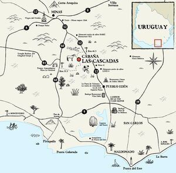

De las Sierras
Como llegar
Desde Punta del Este: Se toma la Ruta 10 Interbalnearia hacia el Oeste hasta Solanas (ANCAP) donde nace la ruta 12. Ahí tomar ruta 12 hacia el norte rumbo a Minas. En el Km. 46,5 de la Ruta 12 (Exactamente 16 Km. luego de pasar Pueblo Edén) nace hacia el Oeste camino vecinal denominado “Paso del Campamento”. Hacer 6 Km. por ese camino y a mano izquierda quedará la portera de acceso a Cabaña Las Cascadas. La portera de madera entre dos paredes de piedra rústica tiene cartel indicador de “LAS CASCADAS”.
Desde Montevideo o Aeropuerto Internacional Laguna del Sauce: Tomar la Ruta 10 Interbalnearia hasta Pan de Azúcar. Ahí tomar ruta 60 hacia el norte rumbo a Minas. En el Km. 35,5 de la Ruta 60 nace hacia el Este camino vecinal. Hacer 12 Km. por ese camino y a mano derecha quedará la portera de acceso a Cabaña Las Cascadas.
Desde Minas: Tomar la ruta 12 hacia el Sur durante 19 Km. En esa zona faltan mojones indicadores de los Km. Exactamente 19 Km. Al sur de Minas nace hacia la derecha (Oeste) el camino vecinal denominado “Paso del Campamento”. Hacer 6 Km. por ese camino y a mano izquierda quedará la portera de acceso a Cabaña Las Cascadas.
Transporte público: No existen medios de transporte en la zona, preferentemente uso auto particular. Se puede conseguir a solicitud remís o combi para paseos en la zona y/o traslados al aeropuerto.
Aeropuertos cercanos: - Aeropuerto Internacional Laguna del Sauce - 55 Km - Aeropuerto internacional de Carrasco - 115 km
Mapa Turistico
Mapa
Promociones
De lunes a Jueves accede a descuentos
- Cabaña 1,3 y 3 tienen 20% de descuento
- Cabaña 4 tiene 15% de descuento
- Descuento de 10% en cabalgatas
Alquilando dos Cabañas
- Accede a 10% los fines de semana
- Descuento de 10% en caminatas nocturnas y senderismo
- Descuento de 10% en cabalgatas
Alquila 1 mes
- Logra 25 % de descuento
- Descuento de 10% en caminatas nocturnas y senderismo
- Descuento de 10% en cabalgatas
- Descuento de 10% en tour de avistamiento de aves